Introduction:
Traffic could be best characterized as a necessary evil that affects almost everyone on a daily basis, both individually and collectively. Accordingly, I was interested in examining the features and variables that affect traffic volume. Understanding how these different features impact traffic volume has a wide range of implications. For instance, in the age of COVID with employees having a range of flexibility in work-from-home or only having to physically travel into the office at set times, or at “non-traditional” times, these employees would be able to chose their travel hours better and decrease their time wasted in traffic. Furthermore, being able to predict traffic volumes reasonably well would allow anyone to understand patterns and plan their daily or weekend activities around these patterns to limit their time spent. Traffic modeling would also have numerous benefits for any range of companies, primarily those focused in logistics and supply chain, such as Amazon, UPS, etc. The implications and utility of accurate traffic models would be nearly endless in both personal and professional capacities.
Dataset:
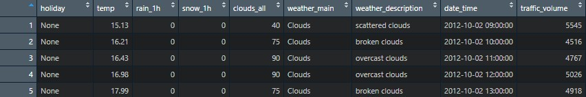
The dataset I used for this project was originally sourced from the UCI Machine Learning Repository- Metro Interstate Traffic Volume. The data was collected from a singular point on I-94 between Minneapolis and St Paul, Minnesota at MN DoT ATR station 301. The traffic volume (in # of cars) was gathered hourly and combined with the given weather features at that time. The time frame for this data was between 2012-2018. The original data set includes nine variables, five of which are numerical and four of which are categorical. The numerical variables are as follows: Temp (average temperature recorded in Kelvin), Rain_1h (the amount of rainfall that occurred that hour in mm), Snow_1h (the amount of snowfall that occurred that hour in mm), Clouds_all (the percentage of cloud cover for that hour), and Traffic_Volume (the hourly reported westbound traffic volume). The categorical variables are: Holiday (national and regional holidays for that day, none if no holiday), Weather_main (a short textual description of the current weather for that hour), Weather_description (a longer textual description of the weather), and Date_Time (the hour and date the data was collected). There were 48204 unique observations collected.
Exploratory Analysis:
Before beginning exploratory analysis, I needed to ensure the data was clean and accurate. My first step was converting Kelvin to Celsius as Celsius is a much easier version to interpret. Next, I utilized boxplots on the numeric variables to ensure there were no errors or extraneous values. I was not too concerned with the overall distribution of these variables, I just wanted to ensure there were no invalid numbers.
 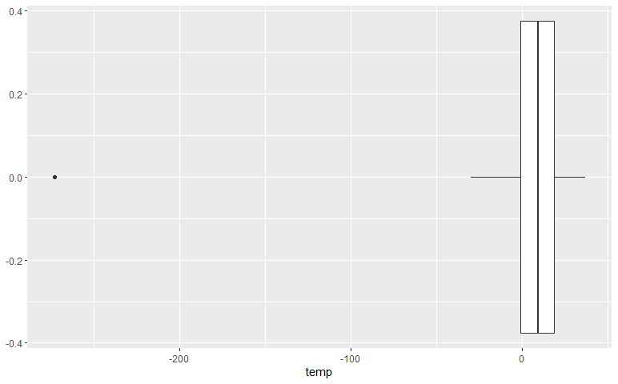
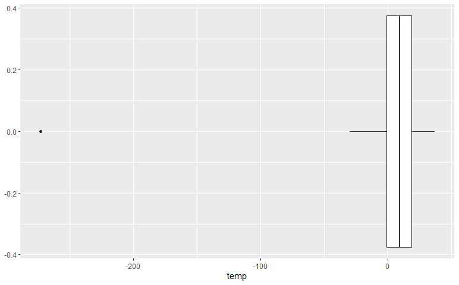
From these plots, it is in fact clear there are a few measurement or recording errors. There are values of 0 Kelvin, i.e. absolute zero, which are not possible. Additionally, there is a value of approximately 9.8 meters of rain in one hour, which has to be another error. Moving forward, I removed all of these values from the dataset since they were obvious errors.
After this, I proceeded to separate the date_time variable into its various parts to examine whether individual hour, day, month, or year had any relationships with the dataset. Additionally, I removed the weather_description variable as it was redundant on weather_main and all of the categorical factors contained within weather_main would be just as valuable for predictions. Now I aimed to gather a general sense of the data and examined the frequency of the traffic volume (to understand the general range of volumes and its overall distribution) and the frequency by weather type (to see what types of weather occurred and how frequently).
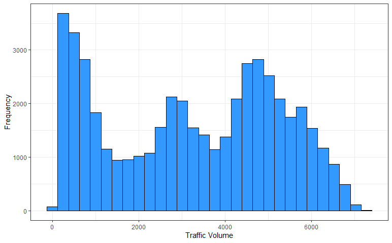 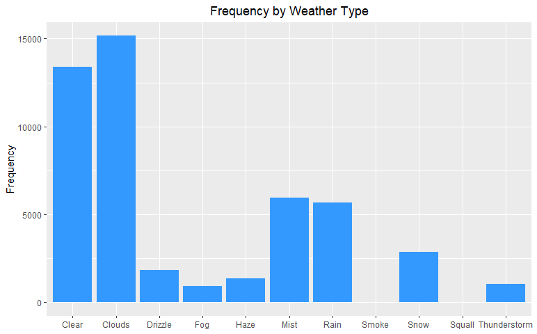
Some of the weather occurrences are extremely rare, namely squall and smoke, and clear/clouds are by far the two most common occurrences. The overall traffic distribution has a decently sized distribution of under 1000 cars per hour, which I assume are the overnight hours. Additionally, there are large groupings around 5000 cars per hour and 3000 cars per hour. Overall, the distribution does not seem to be too abnormal and there seem to be large quantities for each value with no extreme outliers. It may be important for future considerations to keep the distribution of weather patterns in mind, especially for those with few data points.
I decided to examine the relationships between the various factors of date_time next, as I assumed these would be the most impactful variables on traffic volume. Logically, it just makes sense that time of day and day of the week would have a very strong effect on traffic- i.e. 3 A.M. on a weekday would presumably have very little traffic volume.
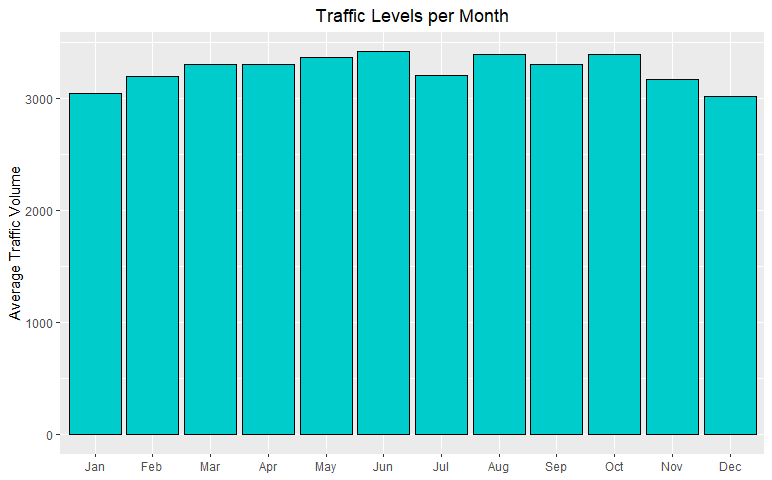 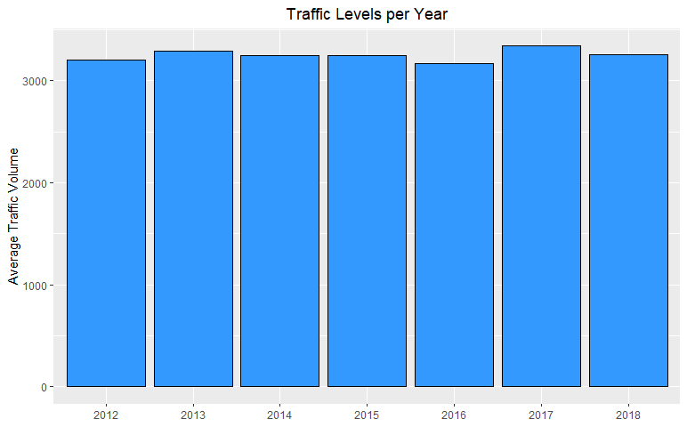
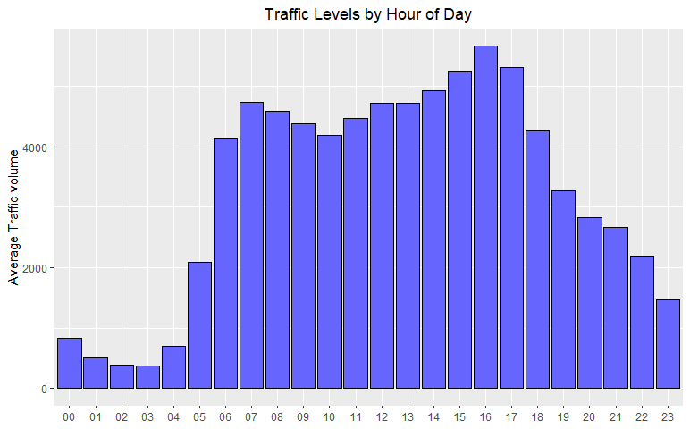 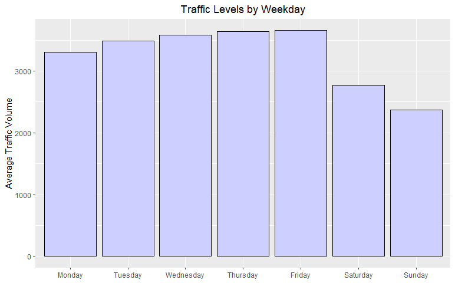
Examining these bar graphs, it is clear that as I presumed, the hour of the day and day of the week have the two strongest relationships with traffic volume. There is a slight level of variance between the per month and per year levels, however, it is not very strong in its effect. The time of day has two clear clusterings in the early morning rush-hour hours and the late afternoon rush hour, with very low levels of traffic between midnight and 5am. The difference between weekday and weekend traffic is also very astute, with weekend traffic levels appearing approximately 1000 cars lower. I considered creating new categorical variables for time-of-day and weekday/weekend following these results, but decided to keep the original values during my regression analysis.
Following this, my next goal was to explore the relationship between weather and traffic. Since rain/snow were both so heavily skewed in their frequencies (most values being 0), I created a binary variable for rain and snow (whether it did in fact rain or snow) in order to compare the traffic volumes on days it rained/snowed to days it did not. Then I plotted these variables on two violin plots to showcase their distributions. Based off these plots, rain did not appear to have a very significant relationship with traffic volume, as the distribution when it did and did not rain are almost equal. snow, however, did seem to have a moderately strong impact on traffic volume as the volume was much lower and the distribution was more equal across all ranges.
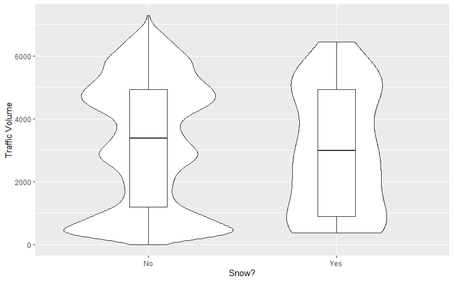 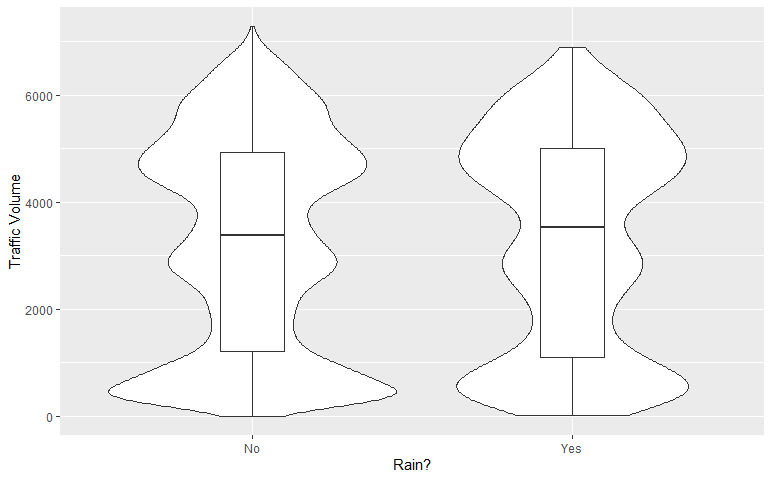
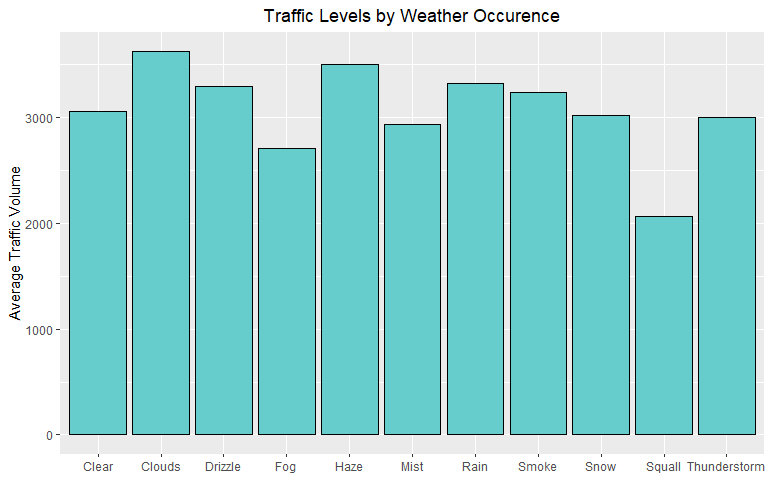
I then wanted to compare the individual categorical weather descriptions to determine if any of the weather patterns themselves had significant effects on traffic volume. From the above bar plot, it is clear that squall and fog had the two strongest effects on volume, which makes sense since they are arguably the two most “severe” weather patterns. Some of the other weather patterns actually demonstrated inverse relationships (in comparison to ‘clear’ volume), such as rain, haze, and clouds.
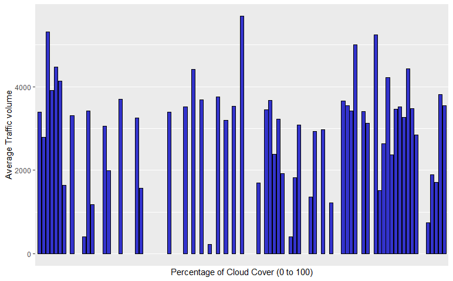 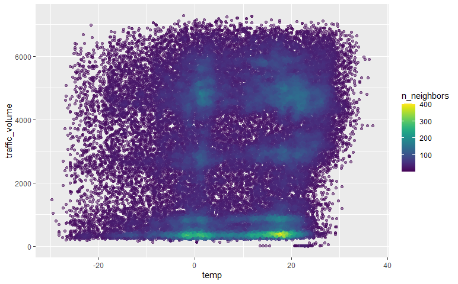
The last approach to my exploratory analysis was examining the last two numerical features and determining if they had any significant impact upon weather volume. The cloud cover plot does not appear to have any clear pattern or distribution that would show a linear relationship with traffic volume. The temperature graph was heavily overfitted, so I reduced alpha and created a geomdensitypoint plot to observe if there were any significant clusters or linear relationships. The strongest clusters were around 0 degrees Celsius and 20 degrees Celsius. Also, the strongest clusters were located at minimum traffic volumes, which would most likely be due to nighttime traffic volumes. There were additional clusters spread throughout the 3000 and 5000 cars per hour areas, assuredly due to the rush hour periods. The temperature plot does not appear to show any strong, linear relationship with traffic volume however.
I also performed a correlation matrix on the numeric features to observe if there was any strong correlation between the various factors. The strongest correlation was between traffic_volume and temperature at 0.13, so based off this, clearly the independent numerical features have a weak linear relationship.
Following my examination of these various relationships and gathering a general sense of the dataset I was working with, I developed two main hypotheses. I will not be testing these hypotheses.
- Time of day is the most important variable to forecasting traffic volume
- The numeric independent variables (weather conditions) do not have a significant impact upon traffic volume
Modeling
This dataset represents a regression analysis problem, not a classification analysis problem. Given this, I needed to decide whether linear, logistic, random forest, or some other method were most appropriate. Because of the nature of the dataset, and following my initial exploratory analysis, I quickly ruled out linear regression. There are far too many variables, and none of them seemed to demonstrate a strong linear relationship with the dependent variable. I also ruled out logistic regression as the dependent variable is not categorical, so it would not be an appropriate means of modeling. Ultimately, I concluded that a random forest regression would be the best fit for this dataset. The overarching nature of random forest and the fact that it, in most cases, allows for a greater number of variables and less bias than decision tree analysis, lead me to chose random forest modeling for this analysis. I also knew that random forest would be able to handle such a large dataset with a variety of categorical and numerical features.
Further, because I am running a regression task on a continuous variable with a large range of values, I knew I would not be able to run a confusion matrix and both precision and recall would not be appropriate measures of analyzing the dataset. Precision and recall relate to TRUE/FALSE POS/NEG values in classification probabilities, and because my model is regression on a continuous variable, neither of these would work or fit. There are no True/FALSE POS/NEG values in a continuous regression problem. Lastly, in place of accuracy score which is appropriate for a classification problem but not regression, I will evaluate the root mean squared error and r-squared values.
In order to run the random forest regression model, I will dummy-code the variables in python and create the features and labels variable for processing. I also needed to ensure I encoded the various time measurements (day, month, hour, etc.) as they are categorical variables, not numerical. I did not scale the dataset as scaling should not impact random forest or decision tree outputs since neither model is distance based. Next, I created the training and testing datasets, and then ran both random forest regression and decision tree regression to see which method created the best results.
Discussion
I received the following results for the decision tree regression model: R-squared of .7238, Mean-Absolute-Error of 557.93, Root-Mean-Squared-Error of 1045.05.
The results for the random forest regression model: R-squared of .8413, Mean-Absolute-Error of 502.73, Root-Mean-Squared-Error of 792.25.
Based off these results, I can conclude that the random forest regression model is much more appropriate for this dataset and a greater predictor for traffic forecasting. I was aiming for the greatest r-squared value and the lowest RMSE value, which the random forest regression signifcantly outperforms the simple decision tree model in both. While, at first glance, the RSME value is quite high, we must keep in mind that the range of possible values for traffic volume (the label/prediction value) was quite large and in the thousands, so it should be expected that the error would be in the hundreds, unless the model was extremely accurate. The r-squared value of .8413 means that approximately 84.13% of the variance in my prediction can be attributed to my model. This is not an incredibly high value, but it does show a relatively strong relationship between my model and the dataset. There are variables that could be added or tweaked to reach a higher r-squared value (and in this case overall model accuracy). R-squared and RSME are the two best measures of model accuracy for this regression analysis, and both demonstrate that the random forest regression method is the most applicable. Overall, the model was certainly not perfect and future tests could tweak hyper-parameters or possibly alter certain variables, but I am pleased with the results and find the model to be a valuable predictor.
There are many potential limitations to my analysis and this dataset. For one, traffic volume is impacted by many variables, some known and some possibly unknown. Things such as lane closures, construction patterns, accidents, etc. could all have a demonstrative effect on traffic volume. Additionally, the data was collected only from a singular point on one interstate. This offers many limitations on the dataset as traffic certainly has different patterns dependent upon location. Also, only using one point in a city even limits this further as it would be more appropriate to collect from a handful of points across the same city to see if there are any patterns related to the actual geographical collection position.
Another potential limitation of only utilizing one singular collection point, is the logical limitation of solely using traffic volume in comparison to traffic times. I believe the model and its utility would be improved by even just adding one additional collection on the same interstate and creating a “traffic time” predictor. This variable would arguably be the most important predictive outcome people would care about. For instance, while there is a strong relationship between traffic volume and traffic time, there are most likely instances where the volume may be in the high range but traffic is flowing smoothly so travel times are still low. The issue itself with traffic on roads isn’t the actual volume of the cars on the road, merely the increase in travel time that usually relates with this volume. However, since they most likely do not have 100% percent relationship, building a model off of traffic time instead of volume would lead to more effective results for people and companies.
Conclusion
Overall, I do believe that the random forest regression model was the best fit for this dataset, and would be for any similar datasets aimed at traffic modeling. My main finding was that weather patterns alone are not great predictors for traffic volume, and that there are arguably too many variables unaccounted for in this dataset to create an extremely accurate model. I think it would be interesting to compare this model with one that included lane closures, construction, and different categorical groupings of the various time elements to examine how well it stacks up. I believe the model would only be improved by adding impactful variables, and the potential future implications and utility of an accurate traffic model are limitless.
Acknowledgment
All aspects of the project were completed by me
Bibliography
Link to dataset: https://archive.ics.uci.edu/ml/datasets/Metro+Interstate+Traffic+Volume
Presentation related to dataset by author of the dataset: https://github.com/dreyco676/Anomaly_Detection_A_to_Z/blob/master/Anomaly%20Detection%20A%20to%20Z.pptx